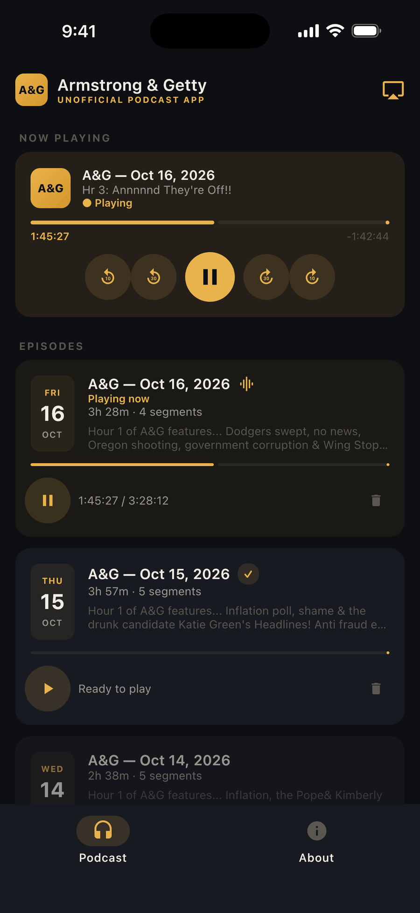
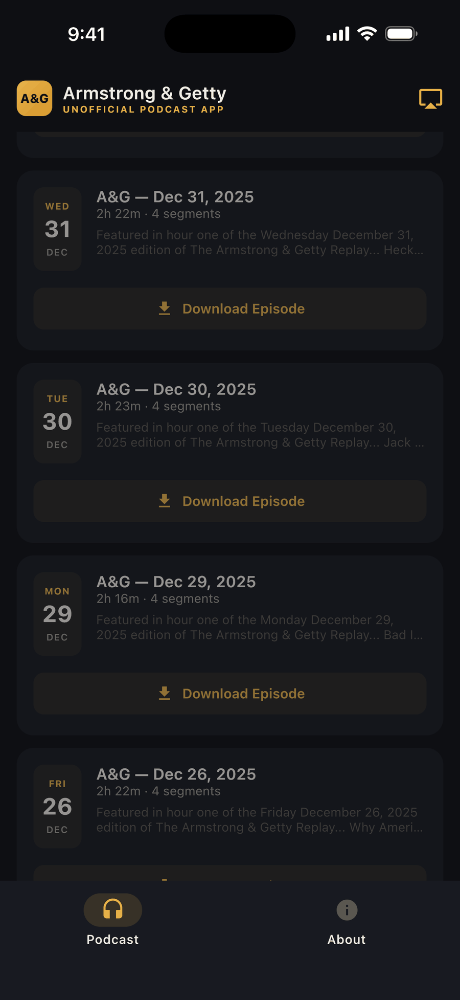

One episode per show day
Every hour the podcast posts for a show day is stitched into a single episode, in order, with each segment a tap away.
Unofficial, free companion app · iPhone & Android
Missed the show this morning? This app takes every hour of The Armstrong & Getty Show podcast and puts each show day in order as one episode. Download it for the commute, cast it to the kitchen speaker, and pick up where you left off.
Looking for the show's official site? Go to armstrongandgetty.com. Want to hear it live? See how to listen live.

Why you'll like it
No account, no clutter, and the app adds no ads of its own (the show's own sponsor breaks play as published). Just the show's official podcast, arranged one show day per episode.
Every hour the podcast posts for a show day is stitched into a single episode, in order, with each segment a tap away.
Grab the whole show with one tap and listen anywhere — on the plane, in the canyon, wherever the signal dies.
Send the show to Chromecast speakers and TVs from iPhone or Android, or use AirPlay on iPhone, and keep control from your phone.
Your spot in every episode is remembered — pause on the driveway, resume in the kitchen without hunting.
Jump back or ahead 10 or 30 seconds, play at 1×, 1.25×, 1.5× or 2×, or tap any segment in the day's list to jump straight to it.
The app checks the feed for new hours in the background (on iPhone, when iOS allows it) and adds them to that day's episode, with lock-screen controls wherever you play it.
How it works
The official podcast posts the show an hour at a time, mixed in with extras. The app puts each show day back together for you.
Weekdays, 6–10 a.m. Pacific, on Talk 650 KSTE and stations around the country.
Hours land in the official Armstrong & Getty On Demand podcast, usually within about half an hour of airing.
Every item posted for that show day joins one episode, in the order it was posted.
Stream it, download it for the drive, or cast it to a speaker, and pick up where you left off.
A quick look
Real screenshots from the app — a gold-on-black theme that stays out of the way of the listening.

The show
Jack Armstrong and Joe Getty have hosted their weekday morning talk show for more than 25 years, covering news, politics and everyday life with plenty of laughs. It airs live 6–10 a.m. Pacific on Talk 650 KSTE in Sacramento and on stations around the country. This app is an independent, fan-built way to hear the show's official podcast on your schedule. The show, its name and all audio belong to Armstrong & Getty and iHeartMedia.
New to A&G? Our guides cover when and where to listen live and how the show's podcasts fit together. The official site has the show's news, Hot Links and contact details.
Good to know
No. It's an unofficial, fan-built companion app. It plays the show's official Armstrong & Getty On Demand podcast and arranges each show day into one episode, but it isn't affiliated with, endorsed by, or sponsored by Armstrong & Getty or iHeartMedia.
We couldn't find one (checked October 13, 2026). The flagship station's live stream and the show's podcasts are on iHeartRadio.
No. The app plays each hour after it's posted to the official podcast, usually the same morning. To listen live, see how to listen to Armstrong & Getty.
When it's in the main feed, yes. One More Thing has its own podcast, and it's often posted to the On Demand feed too; when it is, the app adds it to that day's episode.
The app adds no ads of its own and has no in-app purchases. The show's own sponsor breaks are part of the official episodes and play as published.
It's free on iPhone and Android, with no account or sign-up.
Yes. Cast to Chromecast and Google Cast speakers and TVs from iPhone or Android, or use AirPlay on iPhone. CarPlay isn't supported.
The support page covers downloads, casting and playback, and how to reach the developer.
Contact
This app is an independent, fan-built project. Found a bug, have a feature idea, or just want to say hi? Every message gets read. For questions about the show itself, use the official A&G contact page.